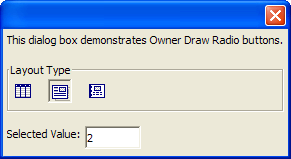

Owner Draw Radio Buttons
This dialog box demonstrates Freeform Radio buttons that use images instead of text. The B directive sets the style of the button, shading the background of the button when the mouse is over it. The T directive defines the bubble help text. The I directive defines the image to be displayed.
The value set by the button click is stored in layout_type and displayed in the text box.
layout_type = 1 ui_dlg_box("",<<%dlg% This dialog box demonstrates Owner Draw Radio buttons.; {lf}; {frame=1,1:Layout Type} {region} (%B=T;T=Browse Layout;I=$a5_browse%layout_type:Browse) (%B=T;T=Form Layout;I=$a5_form%layout_type:Form) (%B=T;T=Report Layout;I=$a5_report%layout_type:Report); {endregion}; {lf}; Selected Value: [.10layout_type]; %dlg%) |

Next
Reading Variables in External Modeless Xdialogs
Limitations
Desktop applications only
See Also